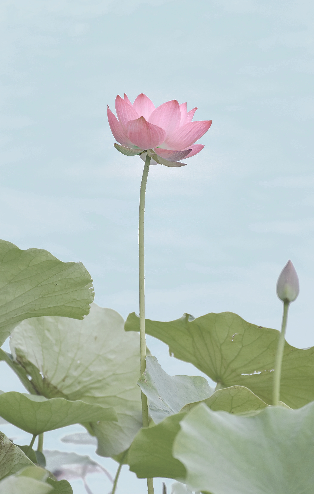

蓮画像のレタッチ

制作期間
レタッチ：1時間
使用ツール

Photoshop
生成AIの使用
-
Gemini
操作・機能の質問
概要
自身のポートフォリオサイトメイン画像として使用する蓮画像のレタッチ。
ターゲット
Webデザイナーの採用を行う企業の採用担当者の方。
目的
私のポートフォリオサイトの顔となるビジュアルとして、自身を表現するために制作しました。
コンセプト
泥の中からでも美しく気高く咲く蓮の花に自分自身の姿を重ね合わせ、見る人に心地よい癒やしと、芯のある印象を同時に与えるノスタルジックで透明感のある世界観を目指しました。
デザイン
ポートフォリオの背景という役割を果たすため、上に載るコンテンツを邪魔しない情報量の引き算と心地よさを最優先に設計しました。まず、全体的に露出を上げて明るくし、コントラストをあえて弱めに調整することで、画面全体がチカチカせず、視覚的にふわっとした優しい質感に仕上げています。色調の面では、背景のバラバラだった色味を整え、綺麗な空は爽やかなアクアブルーへ、私自身を象徴する蓮の花は華やかで優しいピンク色へと変更しました。背景のトーンを落ち着かせて情報量を引き算したことで、広大な空を背景に堂々と咲く蓮の花が主役として美しく引き立ち、背景画像としての機能性と、私らしさを象徴するデザイン性を両立させることを意識しました。